Introduction
In survival analysis, the time until an event of interest (failure, death, relapse, etc.) is described by four interrelated functions:
- Density : the instantaneous rate of events at time .
- Survival function : the probability of surviving past time .
- Hazard function : the instantaneous failure rate at time , conditional on survival to that point.
- Cumulative hazard function : the accumulated hazard up to time .
These four functions are equivalent representations of the same distribution: knowing any one determines the other three. ggfunction provides geoms for all four, both for theoretical distributions and for empirical data.
Theoretical survival curves
geom_survival() draws
from a CDF or survival function. Different distributions encode
different assumptions about the failure mechanism.
ggplot() +
geom_survival(cdf_fun = pexp, xlim = c(0, 6), args = list(rate = 1),
colour = "steelblue") +
geom_survival(cdf_fun = pweibull, xlim = c(0, 6),
args = list(shape = 2, scale = 2), colour = "firebrick") +
geom_survival(cdf_fun = pnorm, xlim = c(-3, 6),
args = list(mean = 3, sd = 1), colour = "forestgreen") +
labs(x = "Time", y = "S(x)",
title = "Survival functions for three distributions") +
theme_minimal()
#> Warning: Duplicated aesthetics after name standardisation: colour
#> Duplicated aesthetics after name standardisation: colour
#> Duplicated aesthetics after name standardisation: colour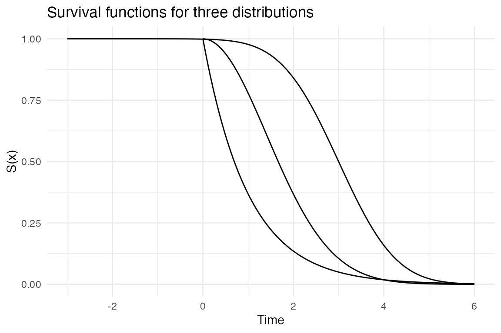
The exponential survival curve (blue) decays at a constant rate—the memoryless property. The Weibull (red) decays faster over time (increasing hazard), while the normal (green) concentrates failures around the mean.
Hazard functions
The hazard function reveals the instantaneous risk of failure at each time point. Its shape is a signature of the underlying failure mechanism.
ggplot() +
geom_hf(pdf_fun = dexp, cdf_fun = pexp, xlim = c(0.01, 6),
args = list(rate = 1), colour = "steelblue") +
geom_hf(pdf_fun = dweibull, cdf_fun = pweibull, xlim = c(0.01, 6),
args = list(shape = 2, scale = 2), colour = "firebrick") +
geom_hf(pdf_fun = dweibull, cdf_fun = pweibull, xlim = c(0.01, 6),
args = list(shape = 0.5, scale = 2), colour = "forestgreen") +
labs(x = "Time", y = "h(x)",
title = "Three canonical hazard shapes") +
theme_minimal()
#> Warning: Duplicated aesthetics after name standardisation: colour
#> Duplicated aesthetics after name standardisation: colour
#> Duplicated aesthetics after name standardisation: colour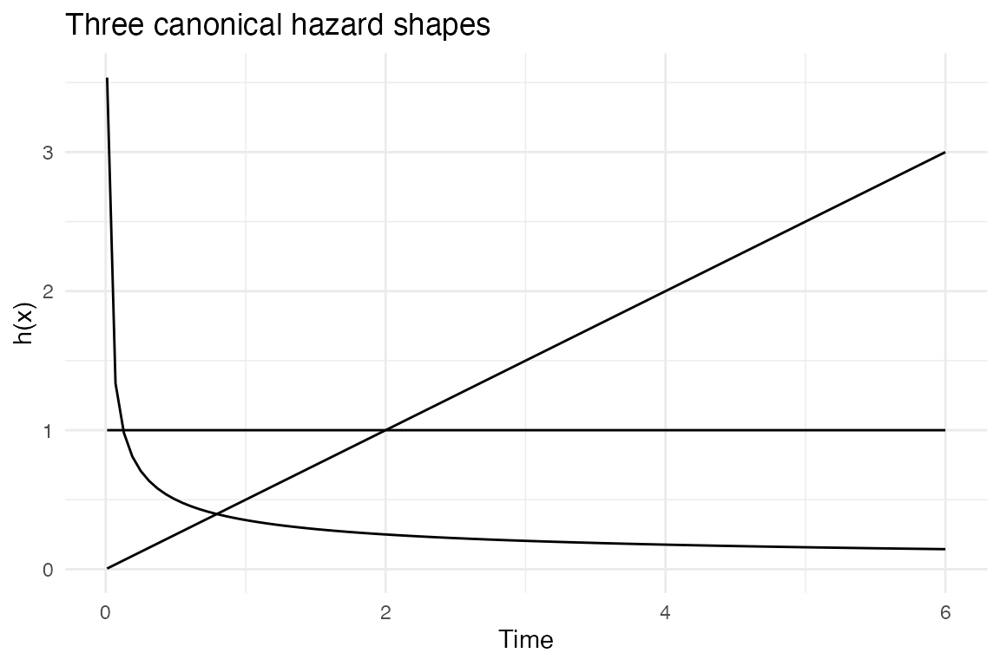
The three canonical shapes are: constant (exponential, blue—no aging), increasing (Weibull with shape > 1, red—wear-out failures), and decreasing (Weibull with shape < 1, green—infant mortality). Real-world systems often exhibit a “bathtub curve” that combines all three phases.
Cumulative hazard functions
The cumulative hazard accumulates the instantaneous hazard over time. A linear cumulative hazard corresponds to a constant hazard rate (exponential distribution).
ggplot() +
geom_chf(cdf_fun = pexp, xlim = c(0, 6), args = list(rate = 1),
colour = "steelblue") +
geom_chf(cdf_fun = pweibull, xlim = c(0, 6),
args = list(shape = 2, scale = 2), colour = "firebrick") +
geom_chf(cdf_fun = pweibull, xlim = c(0, 6),
args = list(shape = 0.5, scale = 2), colour = "forestgreen") +
labs(x = "Time", y = "H(x)",
title = "Cumulative hazard functions") +
theme_minimal()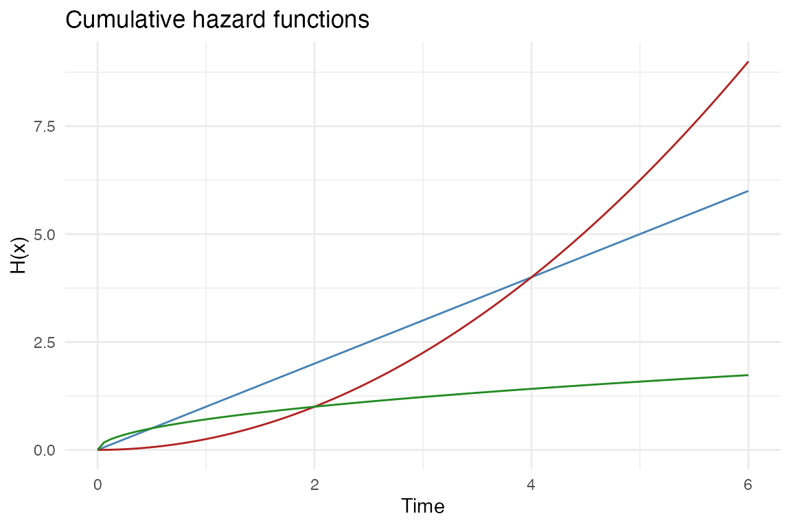
The exponential cumulative hazard (blue) is a straight line with slope equal to the rate parameter. The Weibull with increasing hazard (red) curves upward, while the decreasing-hazard Weibull (green) curves downward.
The full picture
The four functions together provide a complete characterization of a distribution. Here we display all four for a Weibull(2, 2) distribution.
args_w <- list(shape = 2, scale = 2)
xl <- c(0.01, 6)
p_pdf <- ggplot() +
geom_pdf(fun = dweibull, xlim = xl, args = args_w) +
labs(x = "x", y = "f(x)", title = "Density") +
theme_minimal()
p_surv <- ggplot() +
geom_survival(cdf_fun = pweibull, xlim = xl, args = args_w) +
labs(x = "x", y = "S(x)", title = "Survival") +
theme_minimal()
p_haz <- ggplot() +
geom_hf(pdf_fun = dweibull, cdf_fun = pweibull, xlim = xl, args = args_w) +
labs(x = "x", y = "h(x)", title = "Hazard") +
theme_minimal()
p_chf <- ggplot() +
geom_chf(cdf_fun = pweibull, xlim = xl, args = args_w) +
labs(x = "x", y = "H(x)", title = "Cumulative hazard") +
theme_minimal()
(p_pdf | p_surv) / (p_haz | p_chf)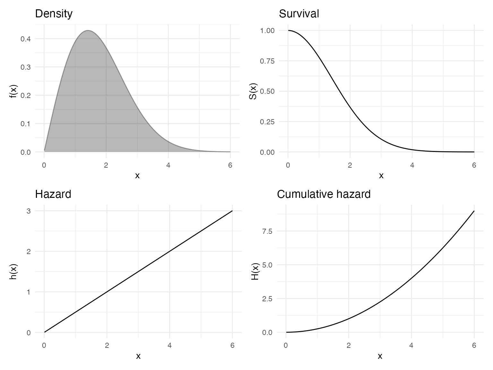
Empirical cumulative hazard
When working with observed data, geom_echf() computes
the empirical cumulative hazard function by transforming the empirical
CDF:
The final observation, where and , is automatically dropped, and the step function extends to the right panel edge at the last finite value.
A simultaneous confidence band is derived by applying the monotone transformation to the DKW bounds on the CDF. Since the DKW inequality guarantees
the transformed band covers the true simultaneously at all with the same probability.
set.seed(42)
df <- data.frame(x = rexp(50, rate = 0.5))
ggplot(df, aes(x = x)) +
geom_echf() +
labs(x = "Time", y = expression(hat(H)[n](x)),
title = "Empirical cumulative hazard (Exp(0.5) data)") +
theme_minimal()
#> Upper confidence band clipped at "H" = 4.61 (`log(2n)`); true upper bound is
#> infinite where `F_n(x) + eps >= 1`. Set `band_max = Inf` to disable.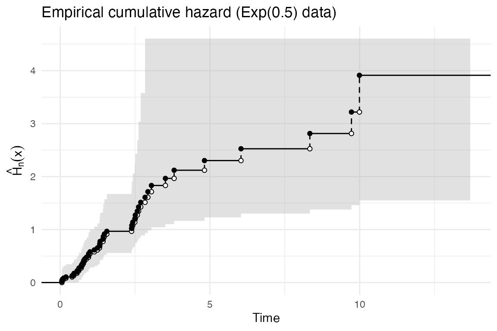
Comparing theory to data
Overlaying geom_chf() on geom_echf()
provides a visual goodness-of-fit check: if the theoretical cumulative
hazard lies within the confidence band, the data are consistent with the
model.
set.seed(42)
df <- data.frame(x = rexp(80, rate = 0.5))
ggplot(df, aes(x = x)) +
geom_echf(show_points = FALSE, show_vert = FALSE) +
geom_chf(cdf_fun = pexp, xlim = c(0, max(df$x)),
args = list(rate = 0.5), colour = "red") +
labs(x = "Time", y = "H(x)",
title = "Empirical CHF vs. Exp(0.5) theory") +
theme_minimal()
#> Upper confidence band clipped at "H" = 5.08 (`log(2n)`); true upper bound is
#> infinite where `F_n(x) + eps >= 1`. Set `band_max = Inf` to disable.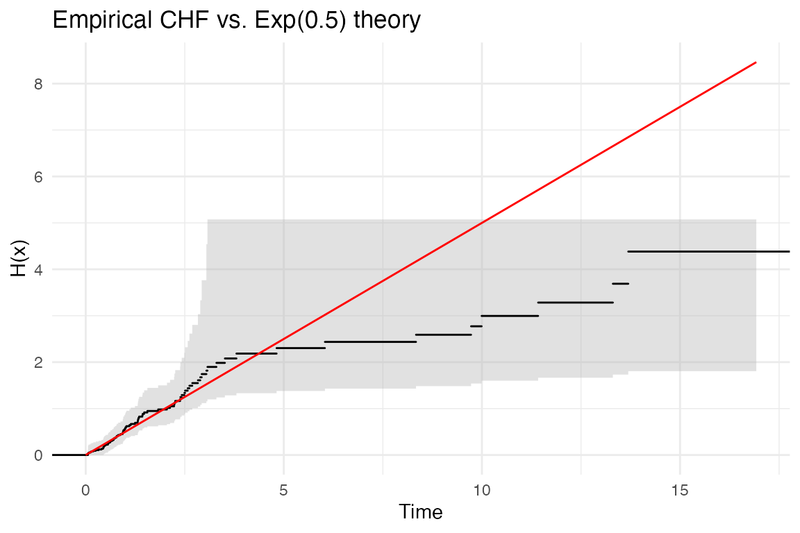
The theoretical line (red) threads through the confidence band, confirming that the data are consistent with an model. For the exponential distribution, the cumulative hazard is linear: , so this plot is analogous to a log-survival plot where a straight line confirms exponentiality.
Multiple groups
geom_echf() supports grouped data via the
colour aesthetic, enabling side-by-side comparison of
cumulative hazard patterns between populations.
set.seed(7)
df_groups <- data.frame(
x = c(rexp(60, rate = 1), rexp(60, rate = 0.3)),
group = rep(c("High risk (rate=1)", "Low risk (rate=0.3)"), each = 60)
)
ggplot(df_groups, aes(x = x, colour = group)) +
geom_echf(show_points = FALSE, show_vert = FALSE) +
labs(x = "Time", y = expression(hat(H)[n](x)),
colour = NULL,
title = "Comparing cumulative hazard across groups") +
theme_minimal()
#> Upper confidence band clipped at "H" = 4.79 (`log(2n)`); true upper bound is
#> infinite where `F_n(x) + eps >= 1`. Set `band_max = Inf` to disable.
#> Upper confidence band clipped at "H" = 4.79 (`log(2n)`); true upper bound is
#> infinite where `F_n(x) + eps >= 1`. Set `band_max = Inf` to disable.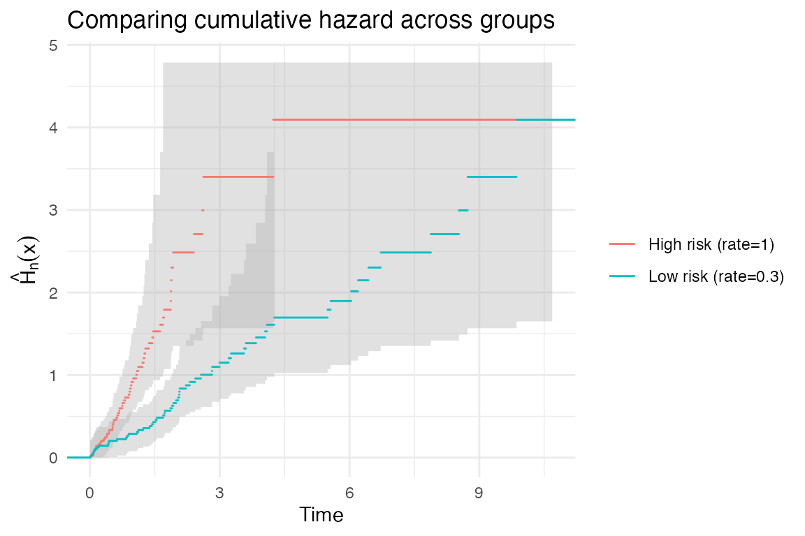
The high-risk group’s cumulative hazard rises steeply, while the low-risk group’s rises more gradually. The non-overlapping confidence bands provide visual evidence that the two groups have different hazard profiles.
Kaplan-Meier survival curves: geom_ecdf_km()
In practice, survival data are often right-censored: some subjects leave the study before the event is observed, so we only know that their event time exceeds the censoring time. The Kaplan-Meier estimator handles this by adjusting the risk set at each event time:
where is the number of events at time and is the number at risk just before .
geom_ecdf_km() requires two aesthetics: x
(the observed time) and status (1 = event, 0 = censored).
It draws the KM curve as a decreasing step function, a simultaneous
equal-precision Greenwood confidence band, and “+” marks at censoring
times.
set.seed(42)
n <- 60
true_time <- rexp(n, rate = 0.5)
cens_time <- rexp(n, rate = 0.2)
df_cens <- data.frame(
time = pmin(true_time, cens_time),
status = as.integer(true_time <= cens_time)
)
ggplot(df_cens, aes(x = time, status = status)) +
geom_ecdf_km() +
labs(x = "Time", y = expression(hat(S)(t)),
title = "Kaplan-Meier survival curve") +
theme_minimal()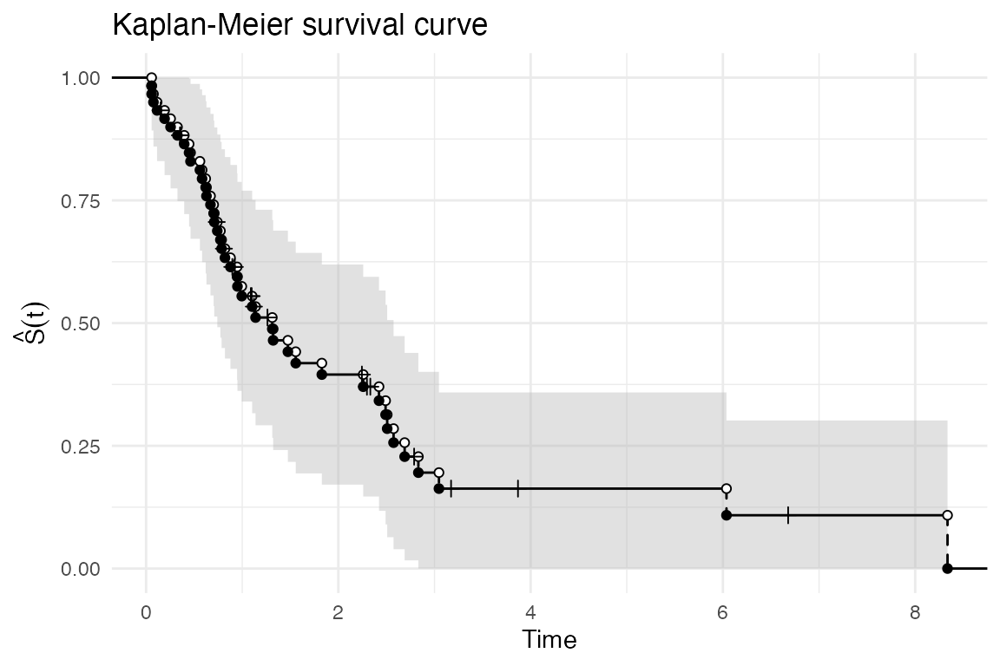
Overlaying a theoretical survival curve. As with the
empirical CHF, you can overlay geom_survival() to assess
goodness of fit.
ggplot(df_cens, aes(x = time, status = status)) +
geom_ecdf_km(show_points = FALSE, show_vert = FALSE) +
geom_survival(cdf_fun = pexp, xlim = c(0, max(df_cens$time)),
args = list(rate = 0.5), colour = "red") +
labs(x = "Time", y = expression(hat(S)(t)),
title = "KM curve vs. Exp(0.5) theory") +
theme_minimal()
#> Warning: Duplicated aesthetics after name standardisation:
#> colour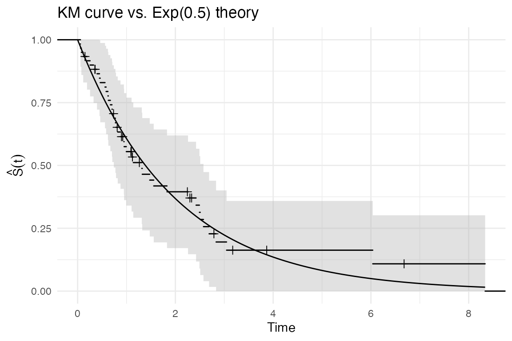
Grouped data. Map colour to a grouping
variable to compare survival across populations.
set.seed(7)
df_km_groups <- data.frame(
time = c(rexp(50, rate = 0.5), rexp(50, rate = 1.5)),
status = sample(0:1, 100, replace = TRUE, prob = c(0.2, 0.8)),
group = rep(c("Low risk", "High risk"), each = 50)
)
ggplot(df_km_groups, aes(x = time, status = status, colour = group)) +
geom_ecdf_km(show_points = FALSE, show_vert = FALSE) +
labs(x = "Time", y = expression(hat(S)(t)),
colour = NULL,
title = "Kaplan-Meier curves by group") +
theme_minimal()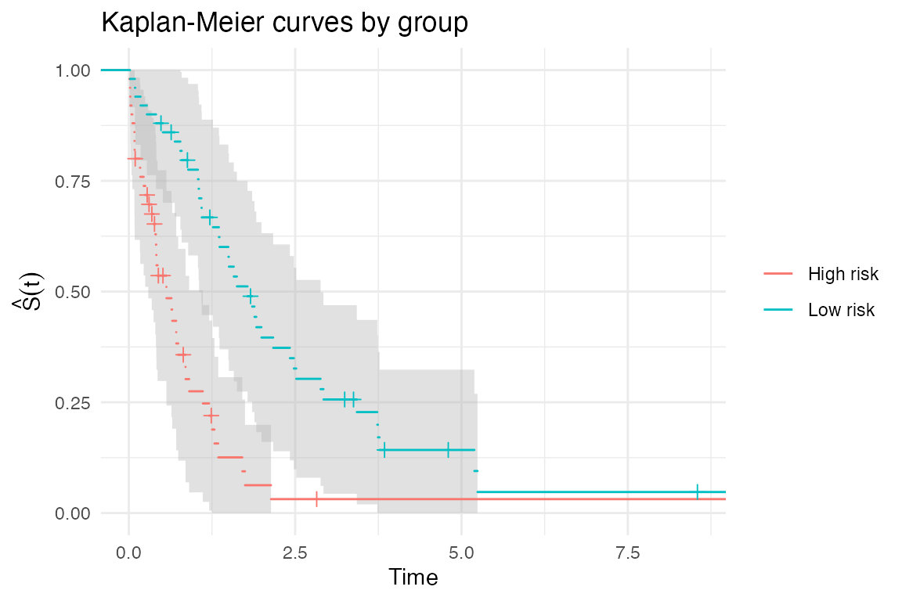
Nelson-Aalen cumulative hazard: geom_echf_na()
The Nelson-Aalen estimator is the censored-data analogue of the empirical cumulative hazard:
geom_echf_na() renders this as an increasing step
function with a pointwise normal confidence band based on the variance
estimator
.
ggplot(df_cens, aes(x = time, status = status)) +
geom_echf_na() +
labs(x = "Time", y = expression(hat(H)(t)),
title = "Nelson-Aalen cumulative hazard") +
theme_minimal()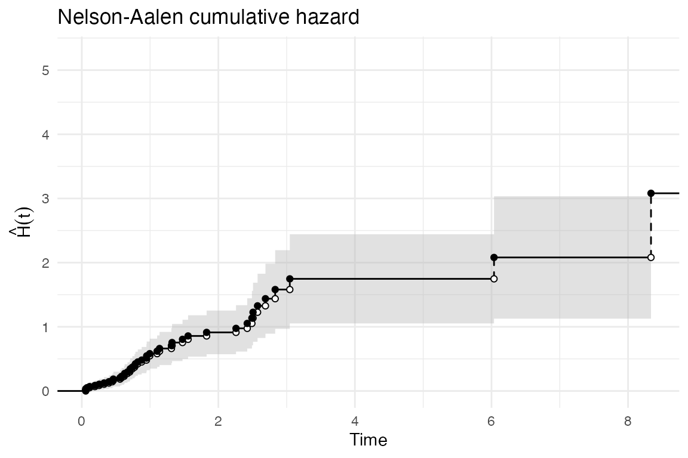
Overlaying a theoretical cumulative hazard.
ggplot(df_cens, aes(x = time, status = status)) +
geom_echf_na(show_points = FALSE, show_vert = FALSE) +
geom_chf(cdf_fun = pexp, xlim = c(0, max(df_cens$time)),
args = list(rate = 0.5), colour = "red") +
labs(x = "Time", y = expression(hat(H)(t)),
title = "Nelson-Aalen vs. Exp(0.5) theory") +
theme_minimal()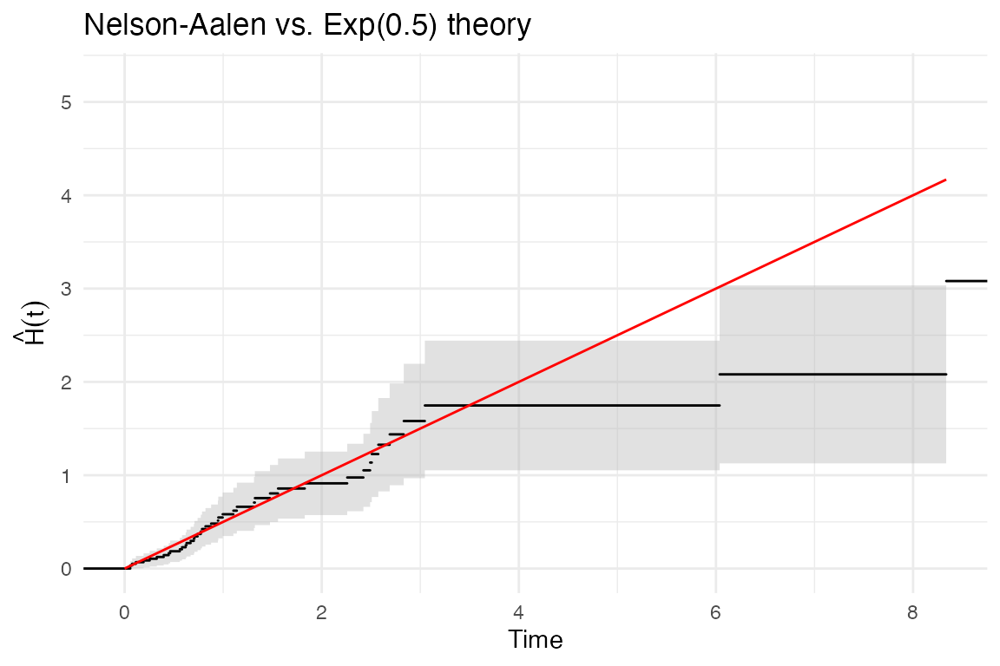
Grouped data.
ggplot(df_km_groups, aes(x = time, status = status, colour = group)) +
geom_echf_na(show_points = FALSE, show_vert = FALSE) +
labs(x = "Time", y = expression(hat(H)(t)),
colour = NULL,
title = "Nelson-Aalen cumulative hazard by group") +
theme_minimal()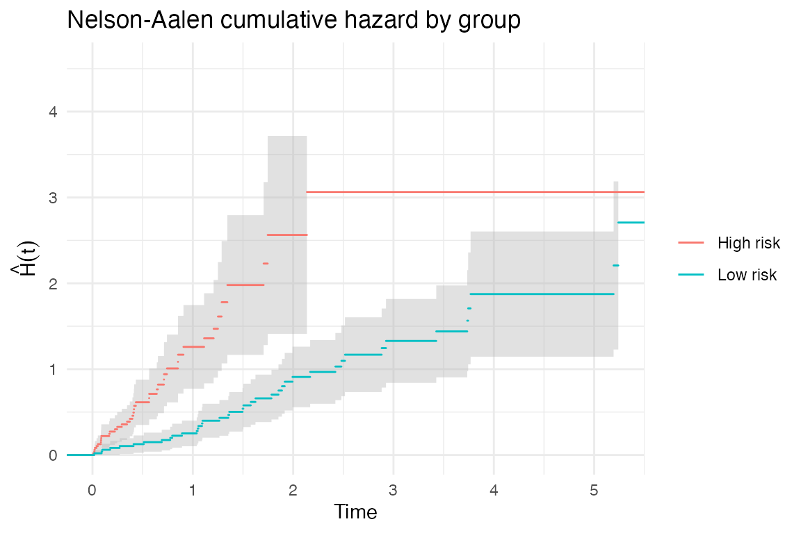